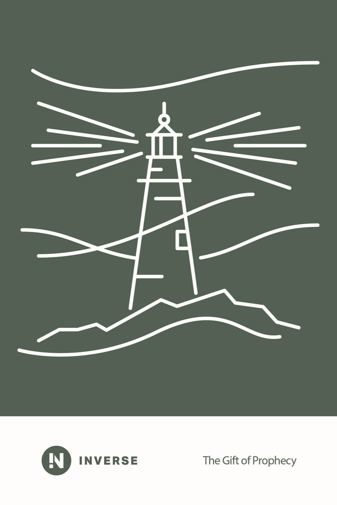

Join us every Saturday | 9:30am Sabbath School | 10:45am Church Service
EVERY SATURDAY, 9:30AM
Every Saturday at 9:30am, before the main service, we gather for Sabbath School - a relaxed, structured Bible discussion that's part study, part devotional, part catching up with people you like. You don't need a theology degree, prior Bible knowledge, or even your own Bible to join in. Just show up. Ask most people here and they'll tell you it's the best part of their week.
We run two streams each week - the Adult Quarterly, and Inverse for young adults.
THIS QUARTER — ADULT QUARTERLY
The Adult Quarterly is our main Sabbath School class - a Bible study guide followed by Adventist churches worldwide, studied together each week in the same discussion format.
Current Quarter: October - December 2026
This quarter is about how God communicates with people - the prophets He spoke through, what they actually wrote, and how you tell a genuine message from a false one. It's a fair question to ask of any faith, and this study takes it head-on rather than around.
This Quarter's Lessons
We're meeting weekly through this study - jump in any week, each lesson stands on its own.
THIS QUARTER — INVERSE
Inverse is our young adult Bible study stream - same Sabbath, same time, same building, different room and discussion style.

Current Quarter: October - December 2026
Same topic as the main lesson this quarter, in the Inverse format - how God speaks to people, what the prophets actually wrote, and how you test whether a message is genuine. Expect more discussion and fewer lectures.
Inverse is designed for young adults but open to anyone who prefers a more discussion-based format.
This Quarter's Lessons
We're meeting weekly through this study - jump in any week, each lesson stands on its own.
FOR THE YOUNGER ONES
Kids don't sit through the adult lesson - Beginners, Primary, Juniors and Teens each have their own room and teacher, running at the same 9:30am start.
Ages 0-5
Simple, sensory Bible stories - felt pictures, action songs and hands-on craft that introduce God's love to the very young. Parents are welcome to stay and join in.
Ages 5-9
Bible stories, craft, drama and songs that introduce Jesus as a friend and Saviour. Kids learn simple memory verses and take home a family devotion prompt for the week.
Ages 10-12
A structured walk through the Bible from Genesis to Revelation and its core doctrines, with real discussion - kids are challenged to think it through, not just listen. Comes with a study guide for through the week.
Ages 13-14+
Open, peer-led discussion about faith, identity and decision-making - less about facts, more about a real relationship with God. Quizzes and whiteboard discussion keep it interactive.
FIRST TIME?
The main Adult Quarterly class meets downstairs. A handful of smaller groups, including Inverse, meet independently around the main church hall. There's no registration - just ask a greeter when you arrive and they'll point you to the right room.
Find a seat - nobody will ask you to sign in or introduce yourself unless you want to.
A brief welcome, a few announcements, and a short story about Adventist mission work happening somewhere else in the world.
The main discussion. A lesson leader facilitates conversation around the week's Bible passage - you're welcome to contribute or just listen.
A short closing prayer and an opportunity to give toward mission work, entirely optional for visitors.
A few minutes to stretch and chat before the main church service starts at 10:45am.
FOR THE WEEK AHEAD
Each quarterly lesson is divided into seven days of daily study. The lesson discussed on Saturday covers the full week's reading, so ideally you read a section each day leading up to Sabbath rather than all at once beforehand.
GET INVOLVED
Our Sabbath School is led by rotating members of the congregation, not a fixed teacher up the front. Come along and you might find yourself leading the discussion sooner than you think.
Want to know more before you visit? Reach out any time.